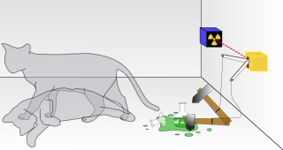

Кубит
Содержание
1 Описание лекции
Из этой лекции мы узнаем:
- Что такое кубит
- В чем разница между значением и состоянием
- Что такое сфера Блоха
- Какие можно делать операции над кубитами
- Что такое измерение
2 Что такое кубит
Как мы знаем, классический компьютер оперирует двоичными числами (0 и 1). Минимальный объем информации для классического компьютера называется бит. Квантовый компьютер оперирует квантовыми битами, или кубитами. Если мы будем считывать кубит, то он также как и классический бит, будет иметь лишь два возможных значения (0 и 1). Так в чем же разница с обычным битом? В чем особенности квантовых компьютеров, которые и дают им преимущества над классическими компьютерами?
Вся суть на самом деле в том, что для квантомеханичеких систем (и кубитов в частности) их состояния и значения это не одно и то же!
3 Состояние vs значение
3.1 Состояние классического бита
Обычно мы не отличаем состояние классического бита от его значения и считаем, что если бит имеет значение , то и состояние его описывается числом .
3.2 Кот Шрёдингера
Давайте вспомним известный мысленный эксперимента Шрёдингера – кот, который одновременно и жив и мертв. Понятно, что значение кота точно одно - он либо жив, либо мертв. Но состояние его более сложное – он находится в суперпозиции состояний жив и мертв одновременно!

Рис. 1.: Кот Шрёдингера
3.3 Состояние кубита
Состояние кубита, если можно так сказать, аналогично коту Шрёдингера: оно отличается от значения кубита и описывается вектором из двух комплексных чисел. Мы будем обозначать состояния (или вектора) символом (кет – вектор-столбец) – это широко принятая в квантовой механике и квантовых вычислениях нотация Дирака:
Что именно значат числа и мы поговорим чуть далее, а пока запишем наш кубит в коде Python. Возьмем, для начала, .
import numpy as np qubit = np.array([1 / np.sqrt(2) + 0j, 1 / np.sqrt(2) + 0j]).reshape((2, 1))
Заметьте, что здесь мы создаем именно вектор-строку размерности .
qubit.shape # (2, 1)
3.4 Связь состояния и значения кубита
А теперь разберем подробнее, что же такое наш вектор и что же значат цифры . Для начала посмотрим на то, а какие состояния имеет кубит, для которого мы точно знаем значение. То есть посмотрим на кота Шрёдингера, но который точно жив или точно мертв.
3.4.1 Базисные состояния
Посмотрим, как выглядят состояния кубитов со точно определенными значениями:
Что мы можем сказать об этих состояниях? Как минимум следующее:
- Они ортогональны ()
- Они имеют единичную норму
- Они образуют базис
Что это значит для нас? А то, что любое состояние мы можем записать как линейную комбинацию векторов и , причем коэффициенты в этой комбинации будут как раз наши :
basis_0 = np.array([1 + 0j, 0 + 0j]).reshape((2, 1)) basis_1 = np.array([0 + 0j, 1 + 0j]).reshape((2, 1)) c1 = c2 = 1 / np.sqrt(2) np.allclose(qubit, c1 * basis_0 + c2 * basis_1) # True
3.4.2 Амплитуды вероятностей
Квантовая механика устроена таким интересным образом, что если мы будем измерять значение кубита, то вероятность каждого из вариантов будет пропорциональная соответствующему коэффициенту в разложении состояния. Но так как амплитуды у нас это в общем случае комплексные числа, а вероятности должны быть строго действительные, мы должны домножить амплитуды на комплексно сопряженные значения. В случае наших значений мы получаем:
p0 = np.conj(c1) * c1 p1 = np.conj(c2) * c2 np.allclose(p0, p1) # True np.allclose(p0 + p1, 1.0) # True
Тут мы сразу видим еще одну важную вещь – сумма вероятностей всех состояний должна быть равна 100%. Это сразу приводит нас к тому, что состояния это не любые комплексные вектора, а комплексные вектора с единичной нормой:
np.allclose(np.conj(qubit).T @ qubit, 1.0) # True
Мы будем очень часто пользоваться транспонирование и взятием комплексно сопряженного от векторов и в квантовой механике это имеет специальное обозначение (бра – вектор-строка). Тогда наше правило нормировки из NumPy кода может быть записано в нотации Дирака так:
4 Сфера Блоха
Надо понимать, что описанный нами выше базис не является единственно возможным базисом. Наши вектора это лишь самый часто применимый базис, который называют базисом. Но есть и другие варианты.
4.1 Возможные базисы
4.1.1 Z-базис
Уже описанные нами и .
4.1.2 X-базис
Базисные состояния и :
plus = (basis_0 + basis_1) / np.sqrt(2) minus = (basis_0 - basis_1) / np.sqrt(2)
4.1.3 Y-базис
Базисные состояния и :
R = (basis_0 + 1j * basis_1) / np.sqrt(2) L = (basis_0 - 1j * basis_1) / np.sqrt(2)
Легко можно убедиться, что все для каждого из этих базисов вектора ортогональны:
np.allclose(np.conj(basis_0).T @ basis_1, 0) # True np.allclose(np.conj(plus).T @ minus, 0) # True np.allclose(np.conj(R).T @ L, 0) # True
Заметьте, что в наших векторных пространствах скалярное произведение это ! Именно поэтому мы должны делать транспонирование и комплексное сопряжение первого вектора в паре.
4.2 Сфера Блоха
Обозначения выбраны не случайно – они имеют геометрический смысл.

Рис. 2.: Сфера Блоха
Принято считать, что ось это основная ось, так как физически, квантовые компьютеры измеряют именно по этой оси. Ось она, если можно так выразиться, смотрит на нас и поэтому обозначается и . А ось направлена как бы вдоль и поэтому базис обозначают как «право» () и «лево» ().
Вектор состояния кубита также называют волновой функцией и этот вектор может идти в любую точку сферы Блоха. Так как сама сфера имеет единичный радиус, это гарантирует нам, что для всех состояний сумму квадратов амплитуд будет равна единице.
5 А что можно делать с таким кубитом?
5.1 Линейные операторы
Любое наше действие, которое мы совершаем с кубитом в состоянии должно переводить его в другое состояние . Что переводит один вектор в другой вектор в том же пространстве? Правильно, матрица! Ну или, другими словами, линейный оператор. Мы будем обозначать их .
5.2 Обратимость
Наша природа устроена таким образом, что почти все действия, которые мы совершаем с кубитом, должны быть обратимыми. То есть для каждого действия и операции (кроме измерений, но об этом чуть дальше), например , должно быть такое противодействие , что оно вернет кубит в первоначальное состояние:
Тут обозначает взятие комплексно сопряженного. А такие операторы называются самосопряженными.
5.3 Унитарность
Как мы говорили, норма волновой функции должна быть нормирована на единицу, а значит любой оператор, который переводит одно состояние в другое должен сохранять нормировку, то есть должен быть унитарным. Более того, это свойство приводит к тому, что матрица сохраняет скалярное произведение:
Другими словами, унитарный оператор удовлетворяет условию
5.4 Пример оператора
Большое число операторов мы будем разбирать в дальнейших лекция, так как именно операторы (или квантовые гейты) являются основой квантовых вычислений. А пока мы посмотрим один просто пример – оператор Адамара (Hadamard gate) – оператор, который переводит .
5.4.1 Гейт Адамара
Начнем с того, что пока у нас лишь один кубит. Состояние одного кубита это вектор размерности два, а значит оператор, который переводит вектор размерности два в другой вектор размерности два это матрица . Запишем оператор Адамара в матричном виде, а потом убедимся, что он эрмитов, унитарный, а еще, что он действительно переводит состояние .
6 Измерения
Измерения в квантовых вычислениях стоят отдельно именно потому, что они «открывают» коробку с котом Шрёдингера – мы точно узнаем, жив он, или мертв. Вся суперпозиция его состояния исчезает.
Немного о парадоксе измерений
Это интересный факт -- исчезновение суперпозиции многим кажется парадоксом, именно поэтому и появляются разные интерпретации квантовой механики, например, многомировая интерпретация Эверетта. Действительно, это кажется немного странным, что полностью обратимая квантовая механика и непрерывная динамика волновых функций вдруг "ломаются" и мы получаем такой коллапс, который еще называют редукцией фон Неймана. Доктору Эверетт тоже это не нравилось и он предложил другую интерпретацию этого процесса. Согласно его теории, когда мы производим измерения мы как бы "расщепляем" нашу вселенную на две ниточки -- в одной кот остается жив, а в другой остается мертв. К сожалению, любые такие теории все равно остаются на уровне спекуляций, так как почти невозможно придумать эксперимент, который бы подтверждал или опровергал такую гипотезу. Это скорее вопрос того, как каждый из нас понимает этот процесс, так как математически все такие теории в итоге дают один и тот же результат, который мы можем наблюдать и измерять.Как мы уже говорили, у кубита может быть несколько разных базисов: , , . Значение кубита в каждом из этих базисов может быть измерено. Но что такое измерение? Как это записать математически?
6.1 Операторы Паули
На самом деле, любая наблюдаемая величина соответствует какому-то оператору. Например, измерения в разных базисах , , соответствуют операторам Паули:
pauli_x = np.array([[0 + 0j, 1 + 0j], [1 + 0j, 0 + 0j]]) pauli_y = np.array([[0 + 0j, 0 - 1j], [0 + 1j, 0 + 0j]]) pauli_z = np.array([[1 + 0j, 0 + 0j], [0 + 0j, 0j - 1]])
Эти операторы являются очень важными – рекомендуется знать их наизусть, так как они встречаются в каждой 2-й статье по квантовым вычислениям, а также постоянно фигурируют в документации всех основных библиотек для квантового машинного обучения!
6.2 Собственные значения
Хорошо, мы поняли, что есть какая-то связь между нашими измерениями и операторами. Но какая именно? Что значит, например, что измерения по оси соответствуют оператору ?
И тут мы приходим к собственным значениям операторов. Оказывается (так устроен наш мир), что измеряя какую-то величину в квантовой механике мы всегда будем получать одно из собственных значений соответствующего оператора, а состояние будет коллапсировать в соответствующий собственный вектор этого оператора. Другими словами, измеряя кота Шрёдингера мы будем получать значения жив или мёртв, а состояние кота будет переходить в состояние, соответствующее одному из этих значений. А еще измерение не является обратимой операцией – однажды открыв коробку с котом и увидев, что он жив или мертв, мы уже не сможем закрыть ее обратно и вернуть кота в суперпозицию.
Важно понимать, что это не просто что-то из квантовой физики – понимание этих вещей нам очень пригодится потом, когда мы будем говорить о решении практических комбинаторных задач, таких, например, как задача о выделении сообществ в графе!
6.2.1 Собственные вектора
Вернемся к нашему оператору . Легко убедиться, что его собственные значения равны 1 и -1, а собственные соответствующие им собственные вектора это и :
np.linalg.eig(pauli_z) # (array([ 1.+0.j, -1.+0.j]), # array([[1.+0.j, 0.+0.j], # [0.+0.j, 1.+0.j]]))
Таким образом, измерение по оси всегда будет давать нам одно из этих двух значений и переводить состояние кубита в соответствующий собственный вектор.
6.3 Формальная запись
Формально мы можем записать это для любого эрмитова оператора , что собственные состояния этого оператора являются его собственными векторами, а собственные значения в этом случае являются наблюдаемыми значениями:
6.4 Другие операторы Паули
Убедимся, что у остальных операторов собственные значения такие же:
np.linalg.eig(pauli_x) # (array([ 1.+0.j, -1.+0.j]), # array([[ 0.70710678-0.j, 0.70710678+0.j], # [ 0.70710678+0.j, -0.70710678+0.j]]))
np.linalg.eig(pauli_y) # (array([ 1.+0.j, -1.+0.j]), # array([[-0. -0.70710678j, 0.70710678+0.j ], # [ 0.70710678+0.j , 0. -0.70710678j]]))
Принцип неопределенности Гейзенберга
Можно заметить, что у всех операторов Паули нет ни одного общего собственного вектора. Таким образом, мы приходим к ситуации, когда мы не можем одновременно точно измерить два разных оператора, так как наше измерение должно переводить состояние в соответствующий собственный вектор. В квантовой механике это называется принципом неопределенности.6.5 Ожидаемое значение при измерении
Мы не будем писать полный симулятор кубитов, который включает измерения – это требует введения сложного случайного процесса. Но мы можем легко ответить на другой вопрос. А именно, мы можем сказать, а какое будет ожидаемое значение оператора для состояния ? Ну или, другими словами, какое будет математическое ожидание большого числа измерений. Это можно записать следующим образом:
Например, оператор полностью не определен в состоянии , то есть мы будем равновероятно получать значения -1 и 1, а математическое ожидание будет равно нулю:
plus.conj().T @ pauli_z @ plus # array([[0.+0.j]])
С другой стороны, измеряя состояние в X-базисе мы всегда будем получать 1:
plus.conj().T @ pauli_x @ plus # array([[1.+0.j]])
7 Что мы узнали?
- Состояние и значение для кубита не одно и то же
- Состояния – вектора в Гильбертовом пространстве
- Квантовые операторы унитарные и самосопряженные
- Измеряемые значения – собственные значения операторов
- Измерение ломает суперпозицию